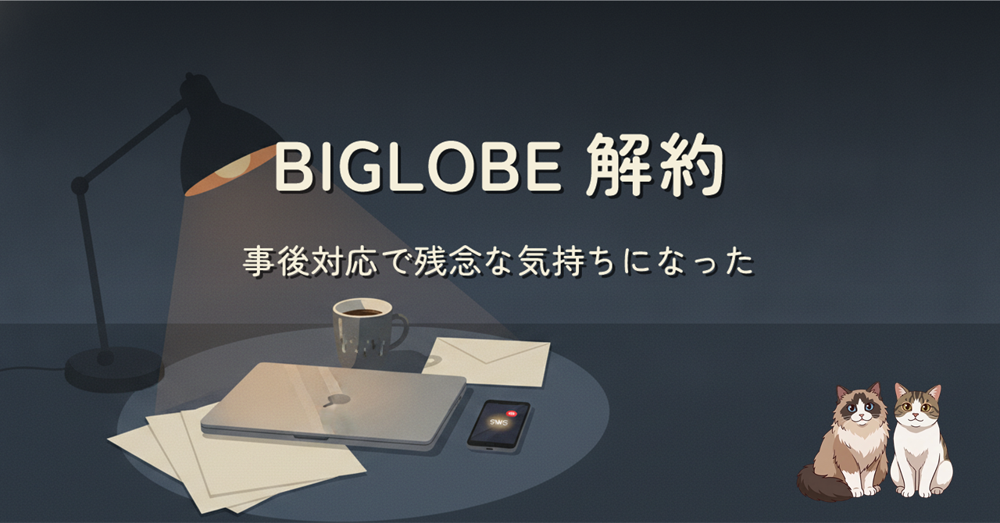

1422 万件のメアド ／ パスワード漏洩で、契約していた BIGLOBE が対象に入りました。最初は「やられたな」くらいの気持ちで、解約までは考えていませんでした。 半日のうちに、解約を決めました。事故そのものより、事後対応の積み重ねで気持ちが切り替わった、という話です。
漏洩そのものは、起きるものとして受け止めています。気持ちが切り替わったのは事後対応の方。登録アドレス宛の個別案内メールが届かず、強制リセットも SMS も電話もなく、汎用の告知ページに「変更を推奨」と書かれただけ。アクセスが集中するのは読めるはずなのに、パスワード変更ページが重くて入れない。 プロバイダ選びで本当に見たいのは平時の指標より「有事の顔」なのかもしれない、と気づいたという記録です。